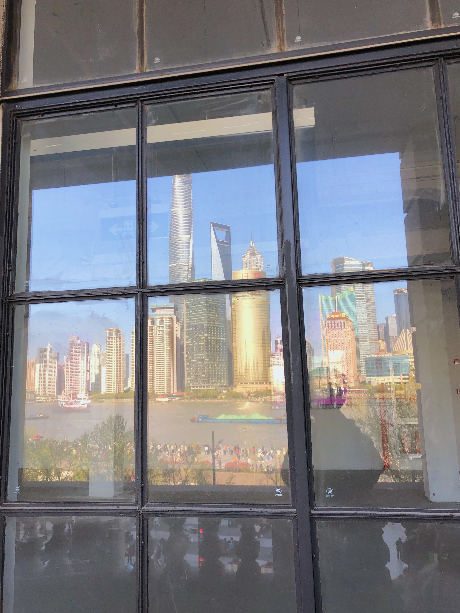
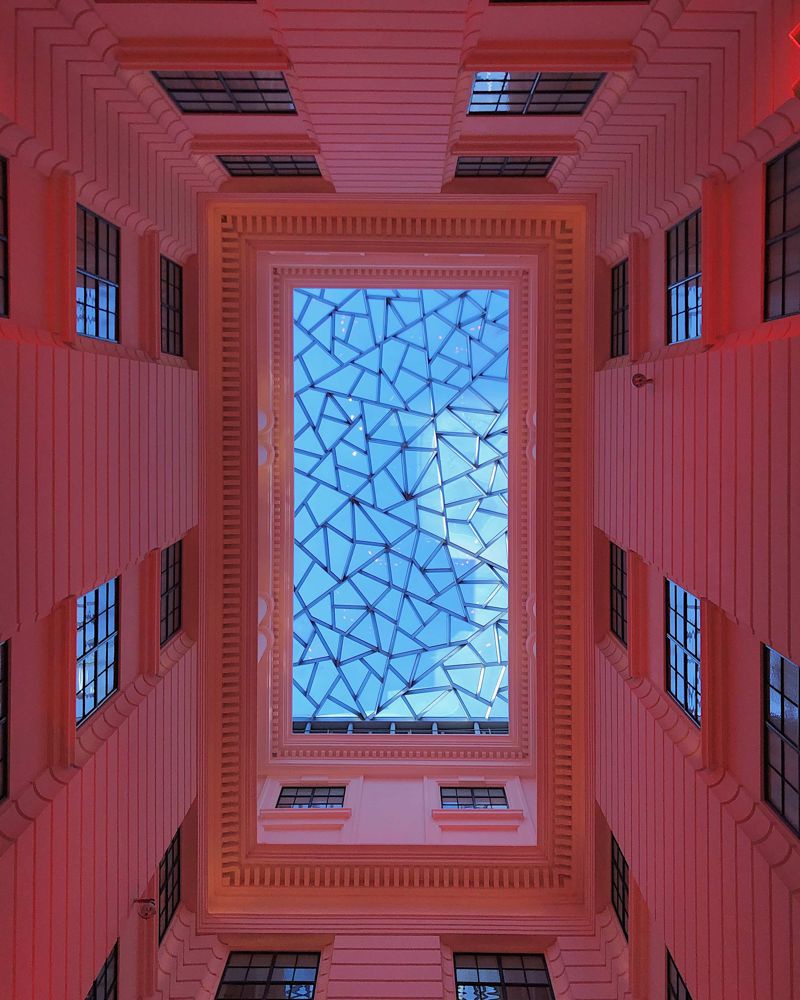
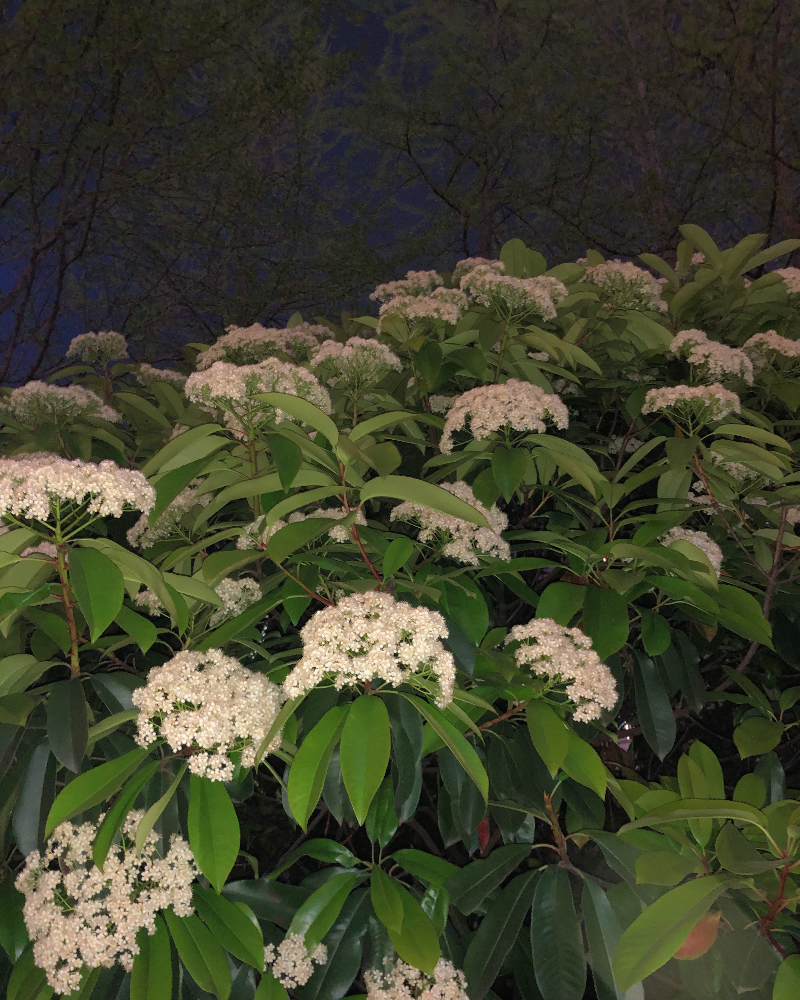
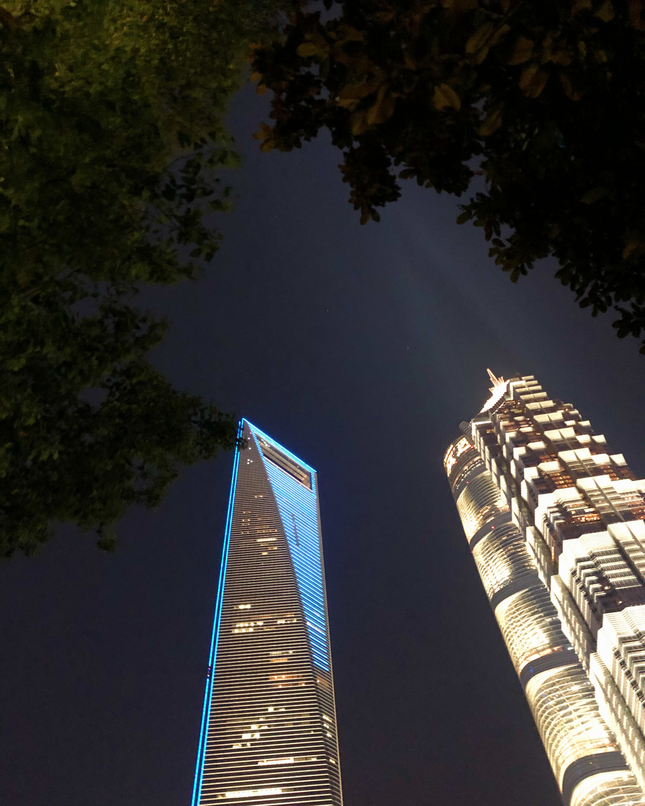
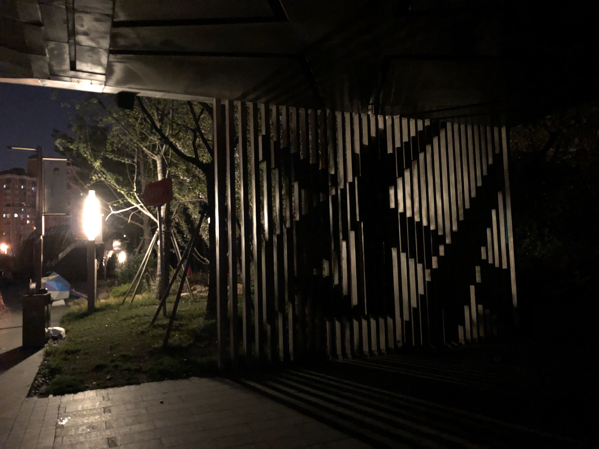

2022-04-08
本文原为情书的前半部分 后半部分
你好，今天是2022年4月8号，去年的这个时候我和你一起去看了莫奈的睡莲。当时和你说莫奈展开展了，本来下一句话就想说“你想不想和我一起去”，没想到在你很激动地说中西美术的老师很推荐这个展后，你就抢先说“去玩叭”。我当时在出地铁站的路上，头很晕，看到这句话一时分不清你是在约我还是自己打算去玩。反正不管怎么样，最后我们就约好在清明节一起去看展。那段时间被你的可爱所迷惑，常常被你发来的一句关心所打动，所以对你的喜欢也不断攀升，似乎到达了一个极大值。有时候也会因为你不记得我说过的话而难过，不过现在已经看开了：陈姐总是会不记得小王说过的话。那个春天真的很开心，做人积极向上、持续抱有对喜欢女孩的爱慕。我总是会美化回忆，所以不用担心，和陈姐过的每一个春天只会是越来越快乐的，哪怕我们还没有在2022年的春天正式见过一面。
我记得那天的每一个细节：不出意外你又迟到了很久，你笑我穿着有着交大校徽的卫衣。我们偷偷爬上亚细亚大楼的四层，尽管那个地方很明显是不对游客开放的。我打开阳台的锁，从楼上往下看到了各种各样的人，但是没有一个人抬头看到了我们。我转过头，发现玻璃正好映着被阳光洒落的浦东建筑群，还有我们两个的影子。我会说这是一张绝佳的照片，举起手机想拍照，然后你悄悄离开。我最后安慰自己，“即使没有她，这也会是一张很完美的照片：既有故事性又有观赏性”，但这肯定不是一张完美的照片，要不是因为你我怎么会举起相机。我当时幻想，我们以后肯定会拍很多很多合照吧！虽然到现在我也没什么勇气和你拍合照，我从小就害怕拍照哈哈
我好像一直都很叛逆，尤其是当你和我在一起的时候，我总能暴露一点顽皮的本性。和你冒险做的一些事情总让我印象深刻：比如和你去游客止步的楼层，牵着你的手跨过滴水湖边的一块又一块岩石，在复旦的东门进行了一次史上最快的拥抱。但是我发现，你并不是坏孩子，陈姐的人设是听话清纯的女孩，是发着光的可爱妹妹。而小王除了有点坏之外，只是一个普通的大学生。
我总是在说，和你经历的每一件事都不可思议——这并不是有意地吹嘘我们的爱情有多么伟大，这就是我最真实的感受。在以前的恋情中，我或许只是想体会早恋的感觉，或许只是想享受所谓的暧昧，这些都是不完全是恋爱。但是，我很确定和你的恋爱就是恋爱本身
我在地铁站外等她
她说社恐到在人多的地方大脑会宕机，我不信
年度最佳照片
展馆天花板，好看
没想到就算不在交大也逃离不了石楠花
在某个小房子的后院抬头所见
在LCM畅聊